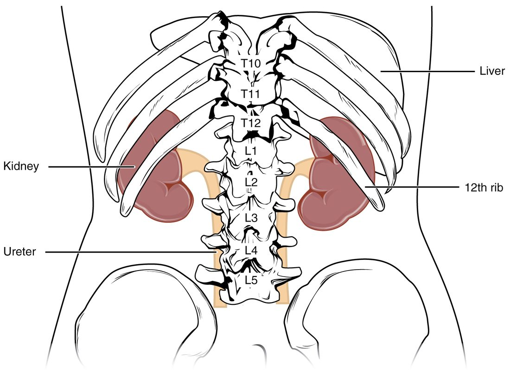

Kidney anatomy is easiest to learn by following urine out of the body: from the microscopic tubes inside each kidney, through the cups and funnel at its center, down the ureters, into the urinary bladder, and out through the urethra. This page labels every part of that urinary tract. It starts with where your kidneys sit and what wraps them, opens a kidney to show its cortex, pyramids and calyces, traces the blood vessels that carry about a fifth of your cardiac output through it, and then covers the ureters, bladder and urethra. It ends with the micturition reflex, the nerve loop that decides when your bladder empties.
The urinary system at a glance
Every minute, a little over a liter of blood flows through your two kidneys. They pull fluid out of it, take back almost everything useful, and let the rest drain away as urine: about 1 to 2 liters a day, carrying wastes such as urea, extra salt and water, and acids. By changing how much salt and water they let go, your kidneys set your blood volume, as you saw in long-term blood pressure control. They also release hormones: renin, erythropoietin (EPO) and the active form of vitamin D, calcitriol.
The kidneys are the only part of the urinary system that changes the urine. Everything after them is plumbing:
- Two kidneys make urine.
- Two ureters carry it down to the bladder.
- The urinary bladder stores it.
- The urethra carries it out of the body.
Where the kidneys sit
Put your hands on your waist with your thumbs pointing backward and slide them up until your thumbs meet your lowest ribs. Your kidneys lie under your thumbs, higher than most people guess (Figure 1).

The location of the kidneys comes down to four facts:
- Level. Each kidney spans roughly the vertebrae T12 to L3. The 11th and 12th ribs cover the back of its upper part, so a hard blow to the lower ribs from behind can bruise or tear a kidney.
- Right is lower. The liver takes up the space above the right kidney, so the right kidney usually sits 1 to 2 cm lower than the left.
- Behind the peritoneum. You met retroperitoneal organs with the digestive system. The kidneys are among them: they lie against the muscles of the back wall of the abdomen, with the peritoneum covering only their front surfaces. A surgeon can reach a kidney from the back without opening the peritoneal cavity.
- Size. Each kidney is bean-shaped, about 11 cm long, 6 cm wide and 3 cm thick, a bit bigger than your fist is wide, and weighs about 150 g. An adrenal gland caps the upper end of each one.
Three coverings
No bone surrounds a kidney. Three layers of tissue hold it in place and cushion it. From the outside in:
- Renal fascia (ren- = kidney; fascia = band): a sheet of dense connective tissue that wraps the kidney, its fat and the adrenal gland together and anchors them to the tissues around them.
- Adipose capsule (adip- = fat), also called the renal fat pad: a thick cushion of fat around the kidney. It absorbs knocks and helps hold the kidney in position. In people who lose a great deal of weight quickly, it can shrink enough to let a kidney drop lower in the abdomen.
- Renal capsule: a thin, tough layer of dense connective tissue stuck to the kidney's surface. It keeps the soft kidney tissue in shape and is a barrier to infection spreading in from nearby.
Inside the kidney
Slice a kidney in a frontal plane, the way a butcher halves a lamb's kidney, and three regions show (Figure 2).
![An inset shows both kidneys in place on either side of the aorta and inferior vena cava, each capped by an adrenal gland. The main drawing is a kidney cut in a frontal plane. A thin outer capsule covers a pale outer zone. Inside it sit striped, cone-shaped pyramids, separated by bands of the outer tissue that reach inward between them. The tip of each pyramid points into a small cup, the cups join larger cups, and these join a funnel that narrows into the ureter. An artery, a vein and nerves enter at the notch on the kidney's medial side, and their branches run between the pyramids and arch over their bases.](../figures/os-25-8.jpg)
This is the internal anatomy of the kidney, from the surface inward:
- Renal cortex (cortex = bark): the outer zone, about 1 cm thick, grainy and reddish-brown. Most of the kidney's microscopic filtering units start here.
- Renal medulla (medulla = inner part): the inner zone. It is not a solid layer. It is split into 8 to 18 cone-shaped renal pyramids, each with its broad base toward the cortex and its point toward the center. The pyramids look striped because they are packed with parallel microscopic tubes and blood vessels running toward the point.
- Renal columns: bands of cortex-like tissue that reach inward between the pyramids. The larger blood vessels run through them.
- Renal papilla (papilla = nipple; plural renal papillae): the rounded point of each pyramid. Urine drips out of tiny openings on it.
From each papilla, urine enters a collecting system of cups and funnels:
- A minor calyx (calyx = cup; plural calyces) cups the tip of each papilla.
- Several minor calyces join into a major calyx. Most kidneys have two or three.
- The major calyces join into the renal pelvis (pelvis = basin), a funnel that narrows into the ureter as it leaves the kidney.
The renal hilum (hilum = small notch) is the slit on the kidney's concave medial side where the ureter, blood vessels, lymphatic vessels and nerves enter and leave. From front to back, the renal vein lies in front, the renal artery in the middle and the renal pelvis behind. Inside the hilum is a fat-filled space, the renal sinus, that holds the calyces, the pelvis and the branching vessels.
A pyramid together with the cortex over it and half of each neighboring column is called a renal lobe. Each lobe drains through its own papilla, so a kidney is really 8 to 18 lobes fused together.
| Renal cortex | Renal medulla | |
|---|---|---|
| Position | Outer zone, under the capsule, plus the renal columns | Inner zone, divided into pyramids |
| Look | Grainy, reddish-brown | Striped, a little paler |
| Shape | A continuous shell about 1 cm thick | 8 to 18 separate cones |
| What it holds | The starting ends of the filtering units and their capillaries | Long straight tubes and vessels running to the papillae |
| Blood flow | About 90% of the kidney's blood flow | About 10%, reaching the deepest parts slowly |
The kidney's blood supply
Your kidneys make up less than half a percent of your body weight, yet at rest they receive about 20 to 25 percent of your cardiac output, roughly 1.1 to 1.2 liters of blood a minute. That flow is far more than their own cells need. It is the raw material for urine: the kidneys make urine out of plasma.
The blood supply of the kidney branches in a fixed order, each vessel named for where it runs (Figure 3):
- Renal artery. You met the paired renal arteries as branches of the abdominal aorta at about L1 to L2. Each enters its kidney at the hilum.
- Segmental arteries. In the renal sinus the renal artery divides into about five segmental arteries, each supplying one segment of the kidney.
- Interlobar arteries (inter- = between, lob- = lobe). They run outward through the renal columns, between the pyramids.
- Arcuate arteries (arcu- = bow). At the base of each pyramid, where medulla meets cortex, they bend and arch along the boundary.
- Cortical radiate arteries (radiate = spreading like rays), also called interlobular arteries. They run straight out from the arcuate arteries into the cortex, toward the surface.
- From the cortical radiate arteries, tiny arterioles lead into the capillaries of the filtering units. You will follow blood through them in the next topic.
![On the left, a kidney cut in a frontal plane with its arteries in red and veins in blue. The renal artery splits into a few large branches, which send branches outward between the pyramids; these arch over the pyramid bases and give off small branches that run out toward the surface. Veins follow the same paths back to the renal vein. A wide gray arrow leads to an enlarged drawing on the right of one microscopic filtering unit: a small arteriole feeding a tuft of capillaries inside a cup, a second arteriole leaving the tuft, and a mesh of capillaries wrapped around a long, looping tubule, draining into a small vein.](../figures/os-25-9.jpg)
The veins run back along the same paths with the same names, cortical radiate veins, arcuate veins and interlobar veins, and join into the renal vein, which empties into the inferior vena cava. There are no segmental veins; the interlobar veins join the renal vein directly. The left renal vein is longer than the right, because the vena cava lies to the right of the midline, and on its way it crosses in front of the aorta.
Segmental arteries are end arteries
Segmental arteries do not connect with one another. If a clot blocks one, no neighboring artery can take over, and the segment it supplies loses its blood and dies: a wedge-shaped patch of dead tissue with its broad side at the kidney's surface. Surgeons use the same fact the other way: they can remove one segment of a kidney along the boundaries between segmental arteries with little bleeding.
The ureters
Each ureter (uret- = to urinate) is a muscular tube, about 25 to 30 cm long and 3 to 4 mm wide, that carries urine from the renal pelvis to the bladder. It runs down behind the peritoneum along the back wall of the abdomen, crosses the edge of the pelvis in front of the iliac vessels, and enters the back of the bladder.
Its wall has three layers, from the inside out:
- A mucosa lined by transitional epithelium, which you met in the epithelium topic. It stretches as a pulse of urine passes and seals urine in.
- A muscularis of smooth muscle. It squeezes urine down in waves of peristalsis, one to five a minute, whatever your position: urine reaches the bladder even when you lie down or stand on your head. Each wave starts in the renal pelvis, set off by stretch as urine collects there.
- An adventitia of loose connective tissue that anchors the ureter in place.
The ureter passes through the bladder wall at a slant, for about 2 cm, before it opens inside. As the bladder fills and its pressure rises, the pressure squeezes that slanted tunnel flat. This acts as a one-way valve: urine can be pushed in by a peristaltic wave, but it cannot be forced back up toward the kidney when the bladder contracts.
A ureter is not the same width all the way. It is narrowest where it leaves the renal pelvis, where it crosses the edge of the pelvis, and where it passes through the bladder wall. A small solid object carried down in the urine is most likely to lodge at one of these three points.
The urinary bladder
The urinary bladder is a hollow, muscular bag that stores urine. It sits in the pelvic cavity, just behind the pubic bone. Empty, it is flat and lies low in the pelvis. As it fills, it rounds out and rises, and a full bladder can reach well above the pubic bone, where a clinician can feel it by pressing on the lower abdomen.
Its wall is built for stretching (Figure 4):
- Transitional epithelium lines it. When the bladder is empty, the lining folds into rugae (ruga = wrinkle), the same word you met in the stomach, and the surface cells are dome-shaped. As it fills, the folds flatten and the cells stretch thin.
- The detrusor muscle (detrudere = to push down) is the smooth muscle of the bladder wall. Its bundles run in several directions and interweave, so when it contracts, it squeezes the bladder from all sides at once.
- The outer surface is covered by peritoneum on top and by connective tissue elsewhere.
A comfortable adult bladder holds about 300 to 500 mL before you feel a strong urge. It can stretch to hold far more, a liter or even more, when emptying is blocked, but then the stretched muscle contracts poorly.
The trigone (tri- = three, gon- = angle) is a smooth triangle on the floor of the bladder. Its three corners are the openings of the two ureters at the back and the opening of the urethra at the front, at the bladder's lowest point. Unlike the rest of the lining, it has no rugae and changes shape little as the bladder fills. It is very sensitive to stretch and irritation, which is why something irritating the bladder floor causes a strong, frequent urge to empty.
The urethra
The urethra is the tube that carries urine from the bladder to the outside. Two rings of muscle control it:
- The internal urethral sphincter is a thickening of smooth muscle where the bladder narrows into the urethra, the bladder neck. It is involuntary: you cannot tighten it on purpose. Sympathetic fibers keep it closed while the bladder fills. It is a distinct ring in males. In females there is no distinct ring: the smooth muscle of the bladder neck and upper urethra works as a functional internal sphincter, and the external sphincter and the pelvic floor do more of the holding.
- The external urethral sphincter is a ring of skeletal muscle where the urethra passes through the pelvic floor. It is voluntary: it is what you squeeze when you hold on. The pudendal nerve, a somatic nerve from the sacral spinal cord, drives it.
Some sources call these the internal and external urinary sphincters; this course uses "urethral".
| Internal urethral sphincter | External urethral sphincter | |
|---|---|---|
| Tissue | Smooth muscle | Skeletal muscle |
| Location | Bladder neck, where the urethra begins | Where the urethra crosses the pelvic floor |
| Control | Involuntary | Voluntary |
| Nerve that keeps it closed | Sympathetic fibers (alpha-1 receptor proteins) | Pudendal nerve (somatic motor neurons, acetylcholine) |
| What relaxes it for emptying | Sympathetic output falls and parasympathetic output rises | Pudendal nerve firing falls |
Female and male urethras
The urethra differs more between the sexes than any other part of the urinary tract (Figure 5).

| Female urethra | Male urethra | |
|---|---|---|
| Length | About 3 to 4 cm | About 18 to 20 cm |
| Course | Straight down and forward, behind the pubic bone | Down through a gland just below the bladder, through the pelvic floor, then along the length of the external genitals, with two bends |
| Opening | At the body surface, just in front of the opening of the reproductive tract | At the tip of the external genitals |
| What it carries | Urine only | Urine, and reproductive fluid at other times |
| Lining | Transitional epithelium near the bladder, stratified squamous epithelium near the opening | Transitional near the bladder, then columnar types, then stratified squamous near the opening |
Length matters clinically. Bacteria from the skin near the opening have only 3 to 4 cm to travel to reach a woman's bladder, so bladder infections are far more common in women than in men. The male urethra's length and bends make passing a catheter harder.
The micturition reflex
Micturition (mictur- = to urinate), also called urination, is the emptying of the bladder. It is controlled by the micturition reflex, a visceral reflex that you learn to override. You met visceral reflexes in the reflexes topic: a sensory receptor, a pathway into the central nervous system, and an autonomic output to smooth muscle. Here the sensory receptors are stretch-sensitive endings in the bladder wall, and the main effector is the detrusor muscle.
Three sets of nerves serve the bladder:
- Parasympathetic fibers in the pelvic splanchnic nerves, from spinal segments S2 to S4. They release acetylcholine onto muscarinic receptor proteins on the detrusor and make it contract. Sensory fibers from the stretch-sensitive endings travel back along the same nerves.
- Sympathetic fibers, from segments T11 to L2. They relax the detrusor (beta-3 receptor proteins) and tighten the internal urethral sphincter (alpha-1).
- The pudendal nerve, somatic, from S2 to S4. It keeps the external urethral sphincter contracted (Figure 6).

The sacral micturition center is the part of the spinal cord at S2 to S4 that holds the parasympathetic neurons to the detrusor and the pudendal motor neurons to the external sphincter, and receives the stretch signals from the bladder. It carries out the reflex. In a healthy person, though, the switch between storing and emptying is thrown higher up, by a group of neurons in the pons, the pontine micturition center, under the control of the cerebral cortex.
Storage
While the bladder fills, the pontine center stays off:
- Sympathetic output relaxes the detrusor, so the bladder fills at low pressure, and keeps the internal sphincter closed.
- The pudendal nerve keeps the external sphincter closed.
- Parasympathetic output to the detrusor stays low.
At about 150 to 250 mL, stretch signals reach the brain and you first notice your bladder. As it fills further, the signals grow stronger and the urge becomes harder to ignore.
Emptying
When you decide to go, the cortex releases its hold on the pontine center, which throws the switch (Figure 7):
- Pudendal output falls, and the external urethral sphincter relaxes. Pressure in the urethra drops.
- A few seconds later, parasympathetic fibers from the sacral micturition center fire, and the detrusor contracts.
- Sympathetic output falls, and the internal urethral sphincter opens as the bladder neck is pulled open.
- Urine flows. Urine moving through the urethra sends more sensory signals that strengthen the detrusor contraction, a positive feedback that keeps it going until the bladder is nearly empty.
A few everyday facts follow from this wiring:
- Holding on. Squeezing the external sphincter and the pelvic floor sends signals that quiet the detrusor for a while, and the urge fades until the bladder fills further.
- Infants. Until about age 2 to 4, the bladder empties automatically whenever it fills to a certain point. Toilet training is the cortex learning to hold the pontine center back.
- Spinal cord injury above the sacral segments. The pons can no longer coordinate the bladder. After a period when the bladder does not contract at all, a purely spinal reflex usually takes over, but the detrusor and the external sphincter often contract at the same time, so the bladder empties poorly and at high pressure.
- Drugs. Drugs that block muscarinic receptor proteins weaken detrusor contractions and are used for an overactive bladder; they can also make it hard to empty the bladder fully.